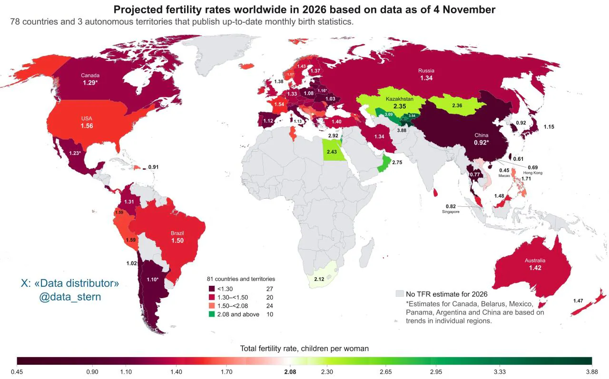
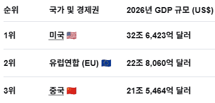
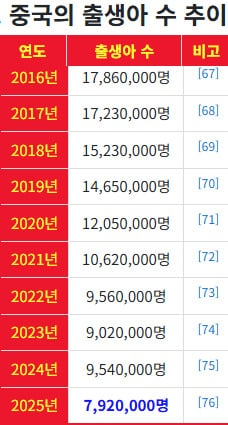
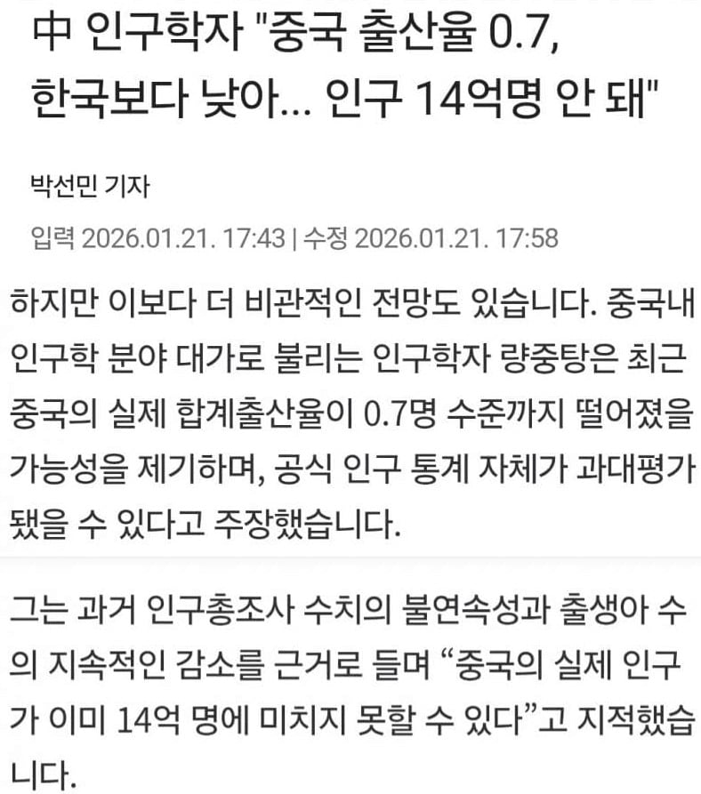
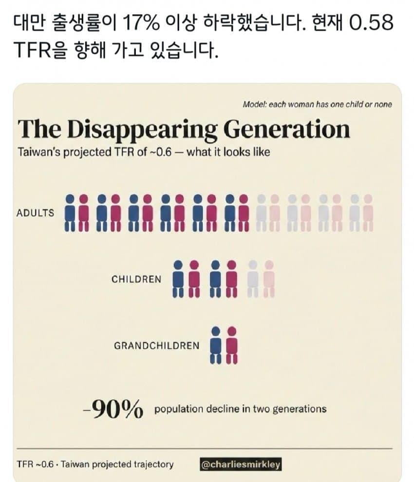
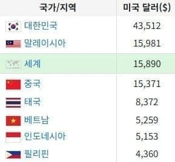
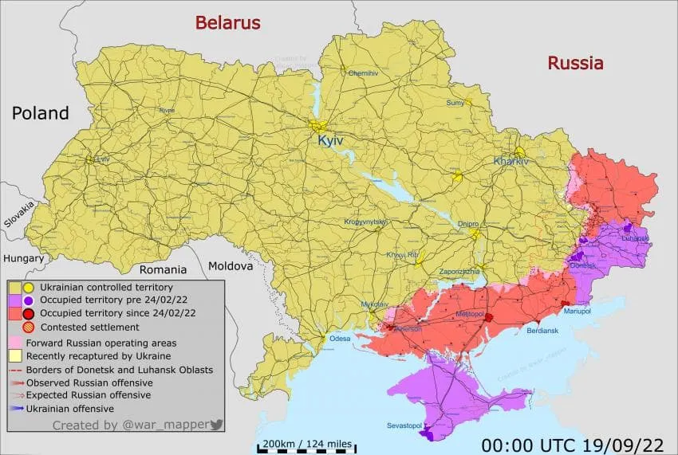

2026년 11월 기준 최신 출산율 지도

한국은 출산율이 상승했고
대만은 출산율 0.61명이 되면서
전 세계 압도적 꼴찌를 기록하는 중 ㄷㄷ
중국은 아직 개발도상국이고 소득도 낮은 편인데
출산율이 0.92로 무려 한국수준으로 낮아짐
현 추세로는 중국 출산율이 한국보다 더 낮아질 것으로 보인다
소득이 전세계 최상위권인 미국은 출산율이 아주 높진 않지만
그래도 1.56을 기록하면서 선진국 중 선방하고 있고, 전세계 인재들을 흡수하고 있어서
총 GDP에서 중국에 역전당할 일은 없어 보인다

2000년 초반만 해도
2020~2030년대 들어서면 중국이 미국을 넘을 거라고 예측하는 경우가 많았는데
2021년 중국의 미국 대비 GDP 비율이 76%로 격차를 가장 크게 좁혔다가
이후엔 시간이 지날수록 격차가 계속 벌어지는 중, 2026년엔 66%
중국의 생각보다 급격한 출산율 하락을 생각하면 그 격차는 계속 더 벌어질 것 같다

2025년 중국의 출생아는
전년 대비 출생아 수 162만 명 감소로 중국 건국 이후 최대 감소이자 역대 최대폭 감소 비율인 -17%를 기록
중국은 초저출산국으로 진입한 지 4년 만에 합계출산율이 1명 미만(0.9명대)으로 진입함
시진핑이 집권을 시작한
2016년 출생아 1786만명에서, 2025년 출생아 792만명으로
출생아를 1000만명이나 감소시킨거
중국은 인구가 14억명에 육박하는데 출생아가 790만명 밑이면
인구빨로 굴리던 경제의 규모, 세수, 산업, 종합국력도 하락 할수 밖에 없는 듯
무서운건 중국 특유의 통계조작 마사지 까지 감안해야 한다는거....
실제로
중국인민정치협상회의 제9차 전국위원회 위원이자, 중화인민공화국 국가인구가족계획위원회 제 1 ~ 6차 전문가위원회 위원
량중탕(梁中堂)은 "중국 출산율 0.7명으로 한국보다 낮음"

대만은 세계최초 출산율 0.6명에 진입하더니(이미 홍콩, 마카오가 달성했지만 도시국가라 제외)
내년에 세계최초 출산율 0.5명대 유력

동남아

눈에 띄는 건 동남아 국가들 출산율이 생각보다 높지 않다는거
중국보다도 소득이 훨씬 낮은 게 동남아 국가들인데
출산율 2.0대를 유지해도 모자랄 판에 필리핀은 벌써 1.71, 말레이시아는 1.48
그리고 태국 출산율은 0.77명으로 훨씬 더 소득이 높은 한국보다도 더 낮은 충격적인 상황
지도엔 안 나왔는데 따로 찾아보니까 인도네시아는 최신 데이터 기준 2.1이고 여기도 하락세
유럽은 동유럽이 이민자, 난민 문제에서 생각보다 자유로운 것과는 별개로
출산율이 빠르게 하락 중이라 이 동네도 고민이 많은 상황

5년째 우크라이나 영토 뺏으려고 전쟁하는 러시아는 1.34
그리고 맞서 싸우고 있는 우크라이나는 1.03
이상이
2026년 잠정 합계출산율 데이터가 나온 81개 국가들 현황이었다.

댓글
수집 당시 댓글 457개
· ㅇㅇ · 11.14 05:52:20
ㅇㅇ · 11.14 05:53:50
· ㅇㅇ · 11.14 05:54:06
ㅇㅇ · 11.14 06:04:46
· ㅇㅇ · 11.14 09:32:23
· ㅇㅇ · 11.14 11:13:44
· ㅇㅇ · 11.14 16:57:08
ㅇㅇ · 11.14 06:10:15
· ㅇㅇ · 11.14 06:14:19
ㅇㅇ · 11.14 06:10:31
ㅇㅇ · 11.14 06:11:18
ㅇㅇ · 11.14 06:11:38
ㅇㅇ · 11.14 06:11:57
ㅇㅇ · 11.14 06:14:00
ㅇㅇ · 11.14 06:14:06
ㅇㅇ · 11.14 06:19:59
ㅇㅇ · 11.14 06:26:43
· ㅇㅇ · 11.14 10:35:33
· ㅇㅅㅇ · 11.14 14:54:42
ㅇㅇ · 11.14 06:32:28
ㅇㅇ · 11.14 06:33:22
· ㅇㅇ · 11.14 06:59:49
ㅇㅇ · 11.14 06:34:49
ㅇㅇ · 11.14 06:35:14
디오니소스 · 11.14 06:56:15
ㅇㅇ · 11.14 07:19:09
ㅇㅇ · 11.14 07:38:29
· ㅇㅇ · 11.14 07:41:04
· ㅇㅇ · 11.14 07:41:28
ㅇㅇ · 11.14 07:39:49
FT-FWMC · 11.14 07:48:50
깨시민 · 11.14 07:52:39
· 깨시민 · 11.14 07:55:31
· 깨시민 · 11.14 07:56:16
· ㅇㅇ · 11.14 08:26:29
ㅇㅇ · 11.14 07:59:41
ㅇㅇ · 11.14 08:12:13
ㅇㅇ · 11.14 08:50:23
ㅇㅇ · 11.14 09:02:19
ㅇㅇ · 11.14 09:15:59
· ㅇㅇ · 11.14 09:18:11
ㅇㅇ · 11.14 09:26:02
· ㅇㅇ · 11.14 09:32:36
ㅇㅇ · 11.14 09:46:37
· ㅇㅇ · 11.14 13:59:40
ㅇㅇ · 11.14 10:05:55
ㅇㅇ · 11.14 10:16:31
ㅇㅇ · 11.14 10:26:37
ㅇㅇ · 11.14 10:29:32
ㅇㅇ · 11.14 10:29:54
ㅇㅇ · 11.14 10:32:16
ㅇㅇ · 11.14 10:34:39
· ㅇㅇ · 11.14 10:48:37
ㅇㅇ · 11.14 10:36:12
· 아아아앙몰 · 11.14 10:41:21
· ㅇㅇ · 11.14 10:47:19
· ㅇㅇ · 11.14 10:49:56
아아아앙몰 · 11.14 10:37:12
Doll · 11.14 10:44:55
· dfadsafgfd · 11.14 11:33:45
· dfadsafgfd · 11.14 11:33:51
· dfadsafgfd · 11.14 11:33:54
· dfadsafgfd · 11.14 11:33:57
· dfadsafgfd · 11.14 11:34:02
gggg · 11.14 10:46:53
ㅇㅇ · 11.14 10:46:59
ㅇㅇ · 11.14 11:10:18
ㅇㅇ · 11.14 11:33:47
ㅇㅇ · 11.14 11:43:41
· ㅇㅇ · 11.14 11:46:09
kawa · 11.14 11:49:05
ㅇㅇ · 11.14 12:16:26
상지불이 · 11.14 12:44:06
ㅇㅇ · 11.14 12:44:10
ㅇㅇ · 11.14 12:52:21
ㅇㅇ · 11.14 13:04:53
ㅇㅇ · 11.14 13:32:07
ㅇㅇ · 11.14 13:33:10
ㅇㅇ · 11.14 13:35:29
ㅇㅇ · 11.14 13:57:52
ㅇㅇ · 11.14 14:00:59
ㅇㅇ · 11.14 14:01:51
ㅇㅇ · 11.14 14:05:51
ㅇㅇ · 11.14 14:07:37
타이밍뒷통수한방 · 11.14 14:20:25
ㅇㅇ · 11.14 14:36:08
· Кошечка · 11.14 14:47:53
· ㅇㅇ · 11.14 15:24:51
o o · 11.14 14:50:01
ㅇㅇ · 11.14 15:13:16
ㅇㅇ · 11.14 15:14:01
eeeee · 11.14 15:49:06
· eeeee · 11.14 15:50:07
ㅇㅇ · 11.14 17:01:37
세배!!! · 11.14 17:10:35
ㅇㅇ · 11.14 17:21:33
ㅇㅇ · 11.14 17:22:14
ㅇㅇ · 11.14 17:22:17
ㅇㅇ · 11.14 17:22:19
ㅇㅇ · 11.14 18:08:21
· ㅇㅇ · 11.14 02:03:41
· ㅇㅇ · 11.14 03:06:22
· ㅇㅇ · 11.14 03:06:28
· ㅇㅇ · 11.14 05:09:37
· ㅇㅇ · 11.14 07:30:40
ㅇㅇ · 11.14 01:36:03
ㅇㅇ · 11.14 01:42:26
ㅇㅇ · 11.14 01:44:36
ㅇㅇ · 11.14 01:48:13
· ㅇㅇ · 11.14 07:04:00
ㅇㅇ · 11.14 01:48:32
ㅇㅇ · 11.14 01:49:02
· ㅇㅇ · 11.14 01:51:14
· ㅇㅇ · 11.14 01:52:58
ㅇㅇ · 11.14 01:51:20
ㅇㅇ · 11.14 01:58:26
ㅇㅇ · 11.14 02:03:25
ㅇㅇ · 11.14 02:04:55
삭제됨 · 11.14 02:10:56
· ㅇㅇ · 11.14 09:12:28
ㅇㅇ · 11.14 02:17:11
ㅇㅇ · 11.14 02:20:43
무적반수생 · 11.14 02:32:08
· ㅇㅇ · 11.14 09:07:46
ㅇㅇ · 11.14 02:32:29
· S＆P500 · 11.14 03:44:52
ㅇㅇ · 11.14 02:33:06
· ㅇㅇ · 11.14 04:21:20
· ㅇㅇ · 11.14 07:11:22
· ㅇㅇ · 11.14 08:56:51
· ㅇㅇ · 11.14 09:28:48
ㅇㅇ · 11.14 02:34:11
· ㅇㅇ · 11.14 08:58:01
ㅇㅇ · 11.14 02:34:44
· ㅇㅇ · 11.14 10:04:41
ㅇㅇ · 11.14 02:38:32
ㅇㅇ · 11.14 02:41:40
· ㅇㅇ · 11.14 09:30:48
ㅇㅇ · 11.14 02:42:30
· ㅇㅇ · 11.14 02:42:37
ㅇㅇ · 11.14 02:54:16
· ㅇㅇ · 11.14 09:35:23
ㅇㅇ · 11.14 02:54:29
ㅇㅇ · 11.14 02:56:00
· ㅇㅇ · 11.14 09:29:20
· ㅇㅇ · 11.14 10:38:46
ㅇㅇ · 11.14 02:58:22
ㅇㅇ · 11.14 03:06:49
ㅇㅇ · 11.14 03:07:50
ㅇㅇ · 11.14 03:31:27
ㅇㅇ · 11.14 03:39:42
· ㅇㅇ · 11.14 10:08:37
· ㅇㅇ · 11.14 10:39:45
ㄹㄹ · 11.14 03:41:53
ㅇㅇ · 11.14 03:42:03
S＆P500 · 11.14 03:44:33
· ㅇㅇ · 11.14 04:15:14
· ㅇㅇ · 11.14 07:09:28
· ㅇㅇ · 11.14 07:14:21
· ㅇㅇ · 11.14 08:41:01
ㅇㅇ · 11.14 03:46:06
· ㅇㅇ · 11.14 09:29:53
· ㅇㅇ · 11.14 09:30:56
ㅇㅇ · 11.14 03:48:16
관타나물 · 11.14 03:58:39
ㅇㅇ · 11.14 04:07:21
· ㅇㅇ · 11.14 11:12:16
ㅇㅇ · 11.14 04:40:49
ㅇㅇ · 11.14 04:50:48
· ㅇㅇ · 11.14 05:09:57
· ㅇㅇ · 11.14 07:27:57
ㅇㅇ · 11.14 05:00:43
ㅇㅇ · 11.14 05:09:04
· ㅇㅇ · 11.14 05:10:38
· ㅇㅇ · 11.14 05:13:56
· ㅇㅇ · 11.14 05:13:59
· ㅇㅇ · 11.14 05:14:13
· ㅇㅇ · 11.14 05:15:06
· ㅇㅇ · 11.14 05:15:20
· ㅇㅇ · 11.14 05:16:37
· ㅇㅇ · 11.14 05:18:56
· ㅇㅇ · 11.14 05:19:40
· ㅇㅇ · 11.14 05:21:17
· ㅇㅇ · 11.14 05:24:02
· ㅇㅇ · 11.14 05:26:17
· ㅇㅇ · 11.14 05:27:20
· ㅇㅇ · 11.14 07:08:52
· ㅇㅇ · 11.14 09:54:45
ㅇㅇ · 11.14 05:09:34
ㅇㅇ · 11.14 05:20:53
ㅇㅇ · 11.14 05:26:59
· ㅇㅇ · 11.14 10:41:45
ㅇㅇ · 11.14 05:27:41
· ㅇㅇ · 11.14 05:32:58
· ㅇㅇ · 11.14 12:19:20
· ㅇㅇ · 11.14 12:22:08
· ㅇㅇ · 11.14 12:25:08
ㅇㅇ · 11.14 05:34:50
ㅇㅇ · 11.14 05:49:41
ㅇㅇ · 11.14 05:51:46
· ㅇㅇ · 11.14 00:01:21
· ㅇㅇ · 11.14 00:07:34
· ㅇㅇ · 11.14 00:35:15
· ㅇㅇ · 11.14 00:48:31
· ㅇㅇ · 11.14 00:49:53
· ㅇㅇ · 11.14 00:49:58
· ㅇㅇ · 11.14 00:50:54
· ㅇㅇ · 11.14 00:51:45
· ㅇㅇ · 11.14 00:52:28
· ㅇㅇ · 11.14 00:56:54
· ㅇㅇ · 11.14 01:13:37
ㅇㅇ · 11.14 00:00:39
ㅇㅇ · 11.14 00:02:17
폴신짱짱맨 · 11.14 00:02:27
ㅇㅇ · 11.14 00:02:38
· 폴신짱짱맨 · 11.14 00:02:49
· ㅇㅇ · 11.14 00:03:50
· つついあやめのおっと · 11.14 00:04:43
· ㅇㅇ · 11.14 00:10:12
ㅇㅇ · 11.14 00:03:00
· ㅇㅇ · 11.14 00:04:33
· ㅇㅇ · 11.14 10:08:20
ㅇㅇ · 11.14 00:03:17
· ㅇㅇ · 11.14 03:06:39
ㅇㅇ · 11.14 00:03:39
· ㅇㅇ · 11.14 00:04:49
ㅁㅁ · 11.14 00:03:53
かなたん · 11.14 00:05:06
ㅇㅇ · 11.14 00:05:14
ㅎㅇㅎ · 11.14 00:05:54
통붕이 · 11.14 00:06:09
ㅇㅇ · 11.14 00:06:44
도떼녀 · 11.14 00:06:52
· 도떼녀 · 11.14 00:07:13
ㅇㅇ · 11.14 00:07:17
ㅇㅇ · 11.14 00:07:52
ㅇㅇ · 11.14 00:08:00
ㅇㅇ · 11.14 00:08:56
나거한의본질 · 11.14 00:09:44
· 나거한의본질 · 11.14 00:09:58
· 나거한의본질 · 11.14 00:10:24
· 나거한의본질 · 11.14 00:10:43
조광덕 · 11.14 00:10:22
· 조광덕 · 11.14 00:10:30
· 조광덕 · 11.14 00:10:33
도쿄구청 · 11.14 00:11:53
· ㅇㅇ · 11.14 00:17:15
· ㅇㅇ · 11.14 03:03:50
ㅇㅇ · 11.14 00:12:22
irohas · 11.14 00:12:31
· irohas · 11.14 00:12:41
대빵즈
· irohas · 11.14 00:12:49
한궈런
· ㅇㅇ · 11.14 00:41:42
· ㅇㅇ · 11.14 04:21:19
· ㅇㅇ · 11.14 07:05:30
ㅇㅇ · 11.14 00:12:48
ㅇㅇ · 11.14 00:15:50
· ㅇㅇ · 11.14 00:27:12
· ㅇㅇ · 11.14 10:00:51
ㅇㅇ · 11.14 00:16:50
ㅇㅇ · 11.14 00:18:35
ㅇㅇ · 11.14 00:19:48
· behind9639 · 11.14 01:09:17
· ㅇㅇ · 11.14 03:56:53
ㅇㅇ · 11.14 00:23:07
· ㅇㅇ · 11.14 00:23:53
· ㅇㅇ · 11.14 10:01:16
ㅇㅇ · 11.14 00:24:04
· ㅇㅇ · 11.14 00:53:52
· ㅇㅇ · 11.14 03:36:16
· ㅇㅇ · 11.14 03:38:06
· ㅇㅇ · 11.14 10:02:38
ㅇㅇ · 11.14 00:24:42
ㅇ · 11.14 00:26:51
ㅇㅇ · 11.14 00:28:43
ㅇㅇ · 11.14 00:31:02
유붕이 · 11.14 00:34:23
ㅇㅇ · 11.14 00:36:24
ㅇㅇ · 11.14 00:36:40
· ㅇㅇ · 11.14 00:54:51
· ㅇㅇ · 11.14 02:49:49
· ㅇㅇ · 11.14 03:04:56
ㅇㅇ · 11.14 00:38:24
ㅇㅇ · 11.14 00:42:24
ㅇㅇ · 11.14 00:42:50
· ㅇㅇ · 11.14 10:04:58
160 · 11.14 00:45:15
· ㅇㅇ · 11.14 00:59:29
· ㅇㅇ · 11.14 01:50:06
· ㅇㅇ · 11.14 01:51:20
ㅇㅇ · 11.14 00:45:27
ㅇㅇ · 11.14 00:53:48
ㅇㅇ · 11.14 01:00:26
ㅇㅇ · 11.14 01:04:10
ㅇㅇ · 11.14 01:05:02
푸주한 · 11.14 01:32:46
· ㅇㅇ · 11.14 01:44:24
· ㅇㅇ · 11.14 09:46:44
ㅇㅇ · 11.14 01:34:51
ㅇㅇ · 11.14 01:35:11
시립 · 11.13 08:49:50
꿰꿰 · 11.13 08:52:27
· ㅇㅇ · 11.13 09:27:37
ㅇㅇ · 11.13 08:54:41
· ㅇㅇ · 11.14 00:11:46
· ㅇㅇ · 11.14 02:06:33
· ㅇㅇ · 11.14 03:25:15
· ㅇㅇ · 11.14 04:11:35
· ㅇㅇ · 11.14 11:09:52
· ㅇㅇ · 11.14 11:17:54
ㅇㅇ · 11.13 08:55:09
ㅇㅇ · 11.13 08:57:06
· ㅇㅇ · 11.13 23:59:55
ㅇㅇ · 11.13 09:04:20
ㅇㅇ · 11.13 09:14:25
ㅇㅇ · 11.13 09:19:17
김프로 · 11.13 09:24:10
ㅇㅇ · 11.13 09:24:23
ㅇㅇ · 11.13 09:33:06
ㅇㅇ · 11.13 09:37:44
ㅇㅇ · 11.13 09:41:00
· ㅇㅇ · 11.13 09:41:28
· 밋아 · 11.13 11:03:18
· ㅇㅇ · 11.13 12:33:24
· 메기스플렛저 · 11.13 12:48:36
· ㅇㅇ · 11.13 14:35:24
· ㅇㅇ · 11.14 04:11:00
ㅇㅇ · 11.13 09:49:36
ㅇㅇ · 11.13 09:57:09
· ㅇㅇ · 11.13 23:53:15
· 모하메드압두르후세인 · 11.13 23:59:03
· 모하메드압두르후세인 · 11.13 23:59:18
· 모하메드압두르후세인 · 11.13 23:59:32
· ㅇㅇ · 11.14 00:12:34
ㅇㅇ · 11.13 10:01:28
야관문MKll · 11.13 10:06:29
ㅇㅇ · 11.13 11:12:40
ㅇㅇ · 11.13 13:25:30
샨테 · 11.13 23:50:44
ㅇㅇ · 11.13 23:51:44
ㅇㅇ · 11.13 23:52:07
· ㅇㅇ · 11.13 23:52:42
· ㅇㅇ · 11.14 00:00:41
· ㅇㅇ · 11.14 00:15:29
· ㅇㅇ · 11.14 04:14:43
ㅇㅇ · 11.13 23:52:17
ㅇㅇ · 11.13 23:52:18
· ㅇㅇ · 11.13 23:52:49
· ㅇㅇ · 11.13 23:53:14
· ㅇㅇ · 11.14 00:13:40
ㅇㅇ · 11.13 23:52:37
코마리 · 11.13 23:53:23
ㅇㅇ · 11.13 23:53:30
· ㅇㅇ · 11.13 23:54:14
· ㅇㅇ · 11.13 23:54:56
· ㅇㅇ · 11.14 00:14:33
· ㅇㅇ · 11.14 10:05:49
ㅇㅇ · 11.13 23:53:40
실베현자 · 11.13 23:54:18
· 실베현자 · 11.13 23:54:30
ㅇㅇ · 11.13 23:54:31
ㅇㅇ · 11.13 23:54:37
ㅇㅇ · 11.13 23:54:42
ㅇㅇ · 11.13 23:55:09
· ㅇㅇ · 11.13 23:55:17
ㅇㅇ · 11.13 23:55:34
ㅇㅇ · 11.13 23:55:47
ㅇㅇ · 11.13 23:55:51
ㅇㅇ · 11.13 23:55:53
ㅇㅇ · 11.13 23:56:21
· ㅇㅇ · 11.14 00:43:01
· ㅇㅇ · 11.14 10:07:39
모하메드압두르후세인 · 11.13 23:56:36
· 모하메드압두르후세인 · 11.13 23:56:45
· 모하메드압두르후세인 · 11.13 23:57:33
· 폴신짱짱맨 · 11.14 00:04:36
· 모하메드압두르후세인 · 11.14 00:05:10
· 폴신짱짱맨 · 11.14 00:05:50
· 폴신짱짱맨 · 11.14 00:06:23
· 폴신짱짱맨 · 11.14 00:06:49
· 폴신짱짱맨 · 11.14 00:08:53
ㅇㅇ · 11.13 23:56:58
· 모하메드압두르후세인 · 11.13 23:57:58
· 유붕이 · 11.14 00:32:04
· トガ히미코 · 11.14 01:00:19
ㅇㅇ · 11.13 23:57:20
ㅇㅇ · 11.13 23:57:40
ㅇㅇ · 11.13 23:58:31
· ㅇㅇ · 11.14 00:17:50
ㅇㅇ · 11.13 23:58:39
ㅇㅇ · 11.13 23:59:00
ㅇㅇ · 11.13 23:59:19
훠훠훠
つついあやめのおっと · 11.13 23:59:26
· ㅇㅇ · 11.14 01:30:28
· つついあやめのおっと · 11.14 01:31:41
· ㅇ ㅇ · 11.14 01:56:20
· つついあやめのおっと · 11.14 02:10:29
· ㅇㅇ · 11.14 02:30:28
· つついあやめのおっと · 11.14 02:34:27
ㅇㅇ · 11.13 23:59:53
ㅇㅇ · 11.13 08:05:51
ㅇㅇ · 11.13 08:05:52
ㅇㅇ · 11.13 08:06:10
· ㅇㅇ · 11.13 23:52:34
· ㅇㅇ · 11.13 23:55:32
김희망이 · 11.13 08:07:10
· 푸른반복 · 11.13 08:34:47
· ㅇㅇ · 11.13 08:47:12
· ㅇㅇ · 11.13 08:48:24
· 푸른반복 · 11.13 08:52:29
· ㅇㅇ · 11.13 09:15:44
· ㅇㅇ · 11.13 09:42:20
· ㅇㅇ · 11.13 09:46:14
· ㅇㅇ · 11.13 09:57:59
· ㅇㅇ · 11.13 23:53:33
· ㅇㅇ · 11.14 00:18:55
· ㅇㅇ · 11.14 00:39:09
· ㅇㅇ · 11.14 03:21:11
· ㅇㅇ · 11.14 04:10:19
BBiyagi · 11.13 08:07:29
· 김희망이 · 11.13 08:09:44
· ㅇㅇ · 11.13 08:21:30
· ㅇㅇ · 11.13 08:29:49
· ㅇㅇ · 11.13 08:30:54
· ㅇㅇ · 11.13 08:34:33
· 승민지 · 11.13 08:57:56
· ㅇㅇ · 11.13 09:50:41
· ㅇㅇ · 11.13 10:09:03
· ㅇㅇ · 11.13 10:40:09
· ㅇㅇ · 11.13 14:15:10
ㅇㅇ · 11.13 08:07:39
ㅇㅇ · 11.13 08:08:42
ㅇㅇ · 11.13 08:09:26
ㅇㅇ · 11.13 08:14:57
· ㅇㅇ · 11.13 08:28:34
ㅇㅇ · 11.13 08:21:41
· DLBIA1996 · 11.13 08:57:32
· ㅇㅇ · 11.13 09:24:02
· ㅇㅇ · 11.13 12:09:26
ㅇㅇ · 11.13 08:21:51
ㅇㅇ · 11.13 08:24:20
ㅇㅇ · 11.13 08:28:48
· ㅇㅇ · 11.14 14:13:07
ㅇㅇ · 11.13 08:29:07
코박 · 11.13 08:35:45
응뭐 · 11.13 08:36:17
글착 · 11.13 08:36:42
ㅇㅇ · 11.13 08:37:22
· ㅇㅇ · 11.13 08:46:51
· ㅇㅇ · 11.13 09:05:30
· TMF대장 · 11.13 09:14:31
· 모하메드압두르후세인 · 11.14 00:01:26
ㅇㅇ · 11.13 08:38:23
ㅇㅇ · 11.13 08:44:49
· ㅇㅇ · 11.13 09:08:11
· ㅇㅇ · 11.13 14:56:54
부키랑랑 · 11.13 08:45:19